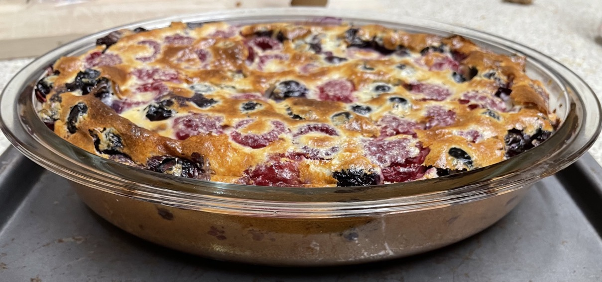
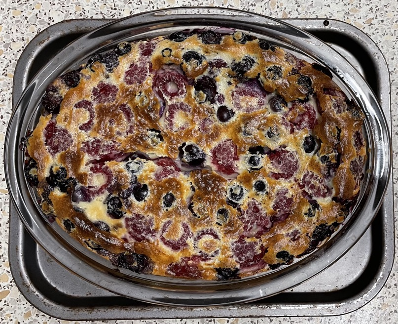
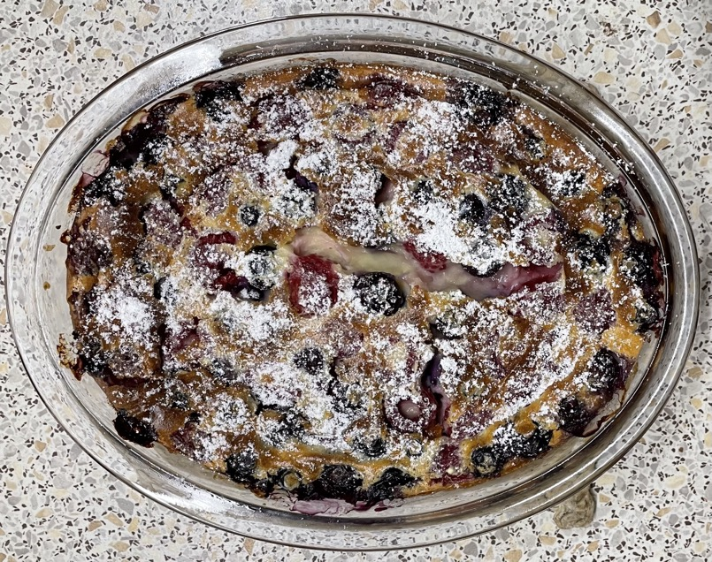

Clafoutis
Batter
- Preheat oven to 190°C
- Add to bowl
- 70g plain flour
- ½ tsp salt
- Whisk in
- 180ml (185g) milk / single cream
- 1 tsp vanilla extract
- Whisk in one at a time
- Whisk in
- 45g caster sugar
- 150ml single cream
Clafoutis
- Butter oven dish
- Scatter
- 300g blueberries / blackberries / raspberries / cherries
- 1 tsp coriander seeds coarsely ground (optional)
- Pour over batter
- Bake for 30 mins, test with stick in middle to make sure cooked
- After cooling, dust with
Serving
Notes
- made: 17 Nov 2022, no coriander, used less salt, 50 mins at 180°C
- next time: use more cream, sugar increased by 5g, all salt can be used, cook in creuset dish because
larger
- get ingredients to room temp before cooking, can warm milk & cream in microwave
coriander seeds
- could add liqueur or spirit
Pics


